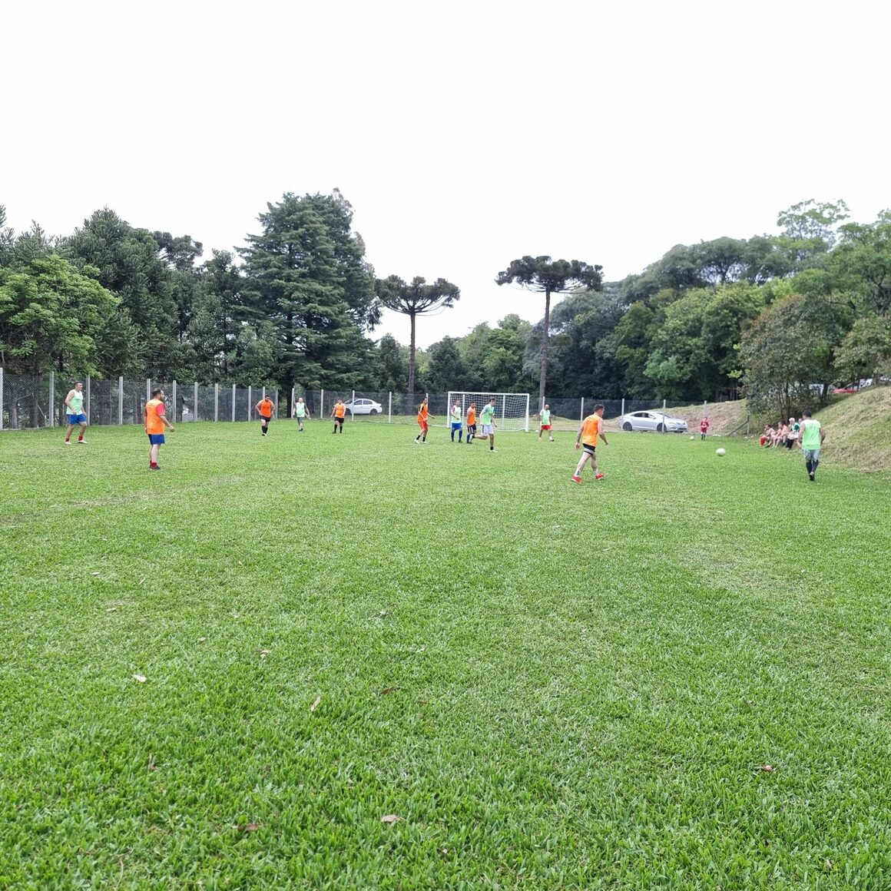
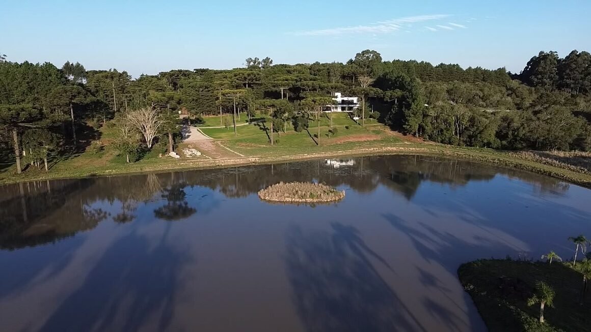
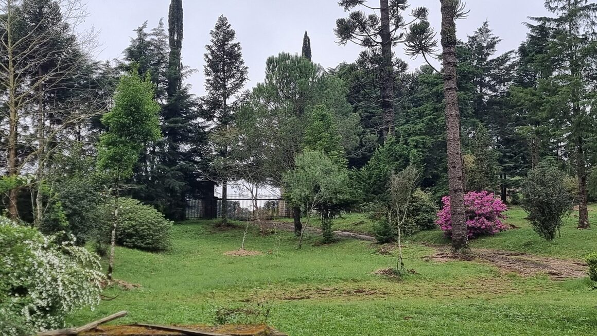

ESPORTE
Movimento e convivência
Futebol society, tênis, beach soccer e vôlei de praia criam opções para diferentes idades e estilos de vida.
Esporte, lazer, água, trilhas e convivência integrados à paisagem da Ecovila.

Futebol society, tênis, beach soccer e vôlei de praia criam opções para diferentes idades e estilos de vida.

O lago principal estrutura a paisagem, recebe pedalinhos e oferece um local tranquilo para pescaria, contemplação e convivência.

Trilhas no meio da mata convidam a caminhar, observar a fauna e viver o verde de perto.

A vista aérea revela a relação entre lago, áreas verdes, acessos e a ocupação de baixíssima densidade.
Depois das imagens da estrutura, conheça cada espaço e as possibilidades planejadas para a vida ao ar livre.
Espaço para contemplar o céu noturno
Cultivo, aprendizado e conexão com a terra
Vida no campo mais próxima da natureza
Campo para jogos e convivência
Esporte em meio ao verde
Quadras de areia para lazer
Espaço para exercícios, saúde e bem-estar
Diversão no lago principal
Local reservado para pescaria
Percursos para diversas idades
Biodiversidade preservada
Água corrente e paisagens naturais para contemplar
Pavimentação intertravada ecológica
A implantação organiza moradia, circulação, lazer e convivência sem apagar a força da paisagem. A mata nativa, os recursos hídricos e a biodiversidade orientam cada escolha.
É uma estrutura pensada para morar bem hoje e preservar o que torna este lugar único para as próximas gerações.
AGENDAR UMA VISITA